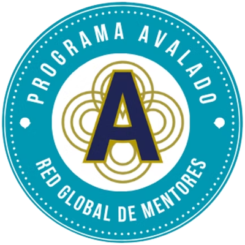

Estructura académica de excelencia
Te acompañamos a fortalecer el diseño pedagógico de tu programa con criterios profesionales, metodológicos y didácticos avalados por estándares internacionales.
¿Tienes un programa de formación propio? ¡Hazlo trascender con el aval de la Academia RGM!

Si ya estás formando personas desde tu experiencia, sabiduría y vocación, es momento de dar un paso más: avalar tu programa con un ente certificador internacional que garantiza calidad, rigor pedagógico y posicionamiento profesional.
Te acompañamos a fortalecer el diseño pedagógico de tu programa con criterios profesionales, metodológicos y didácticos avalados por estándares internacionales.
Un programa avalado transmite confianza, profesionalismo y seriedad, y te posiciona por encima de otros programas no certificados.
Aumenta el valor percibido por tus potenciales clientes y mejora tu reputación como formador/a de alto nivel.
Tu programa formará parte del repositorio oficial de la Academia y podrá ser promovido a través de sus canales institucionales.
Recibirás materiales exclusivos para estructurar tu propuesta con calidad y coherencia, y acompañamiento en la evaluación y mejora.
Recibirás un sello digital de aval que podrás incluir en todo tu material formativo.
Te compartimos el Contrato de Aval Académico de la Academia RGM. Este documento formaliza el proceso mediante el cual evaluaremos y, si corresponde, avalaremos tu programa de formación, otorgándole respaldo profesional y certificación internacional.
El contrato detalla las condiciones, responsabilidades y beneficios de contar con el sello oficial de la Academia RGM. Una vez leído y firmado, podremos avanzar con la revisión académica.
Para presentar tu programa deberás armar un portafolio con tres módulos: uno base (proporcionado por RGM), uno específico en tu área y uno práctico. Incluye plan de estudios, objetivos, contenidos, métodos, materiales y estrategias de evaluación. La estructura debe ser clara, coherente y alineada con los valores de la mentoría. Puedes pedir plantillas y guía. El Comité Académico revisará tu propuesta y sugerirá ajustes si fuera necesario.
El anexo sirve como guía práctica para facilitar al Mentor Experto la presentación de su programa formativo ante la Academia RGM. Incluye plantillas y formatos editables para estructurar el plan de estudios, perfilar al equipo docente, definir criterios de evaluación, redactar bitácoras reflexivas y armar informes de cierre. Asegura la coherencia pedagógica, facilita la revisión del Comité Académico y estandariza la documentación para una evaluación justa, clara y profesional.